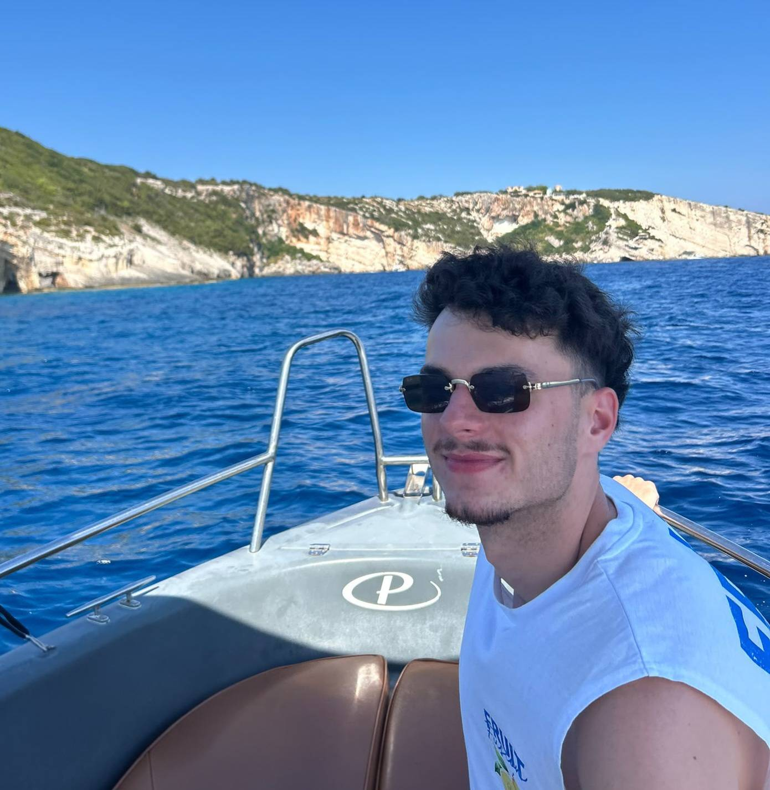
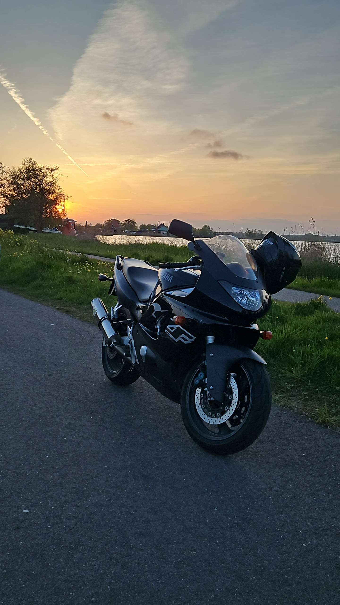
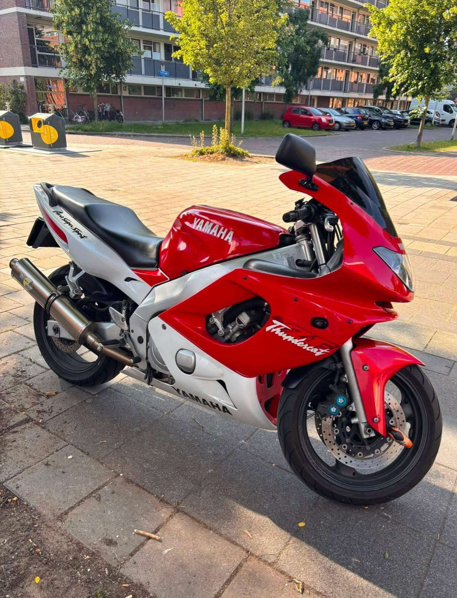

01 / WHOAMI
Van concept naar code bouwen, leren en ontwikkelen.
Hoi, ik ben Railey, online bekend als RLLY. Ik maak graag heldere interfaces, slimme systemen en projecten met een eigen karakter.
Bekijk mijn werk
02 / PERSOONLIJK
Meer dan
alleen code.
Ik ben Railey, 22 jaar oud en kom uit Delft. Momenteel studeer ik Software Engineering aan De Haagse Hogeschool in Den Haag en beweeg ik graag tussen ontwerp en techniek.
Buiten mijn studie en digitale projecten rijd ik graag motor. Op mijn Yamaha YZF600R Thundercat zoek ik graag nieuwe routes op en maak ik ruimte voor een ander soort techniek.
- Leeftijd
- 22
- Thuisbasis
- Delft
- Studie
- Software engineering Y-2
- Motor
- Yamaha YZF600R Thundercat
03 / OP DE WEG
Mijn
Thundercat.
Naast code is dit mijn andere favoriete vorm van techniek: rijden, ontdekken en onderweg nieuwe plekken vinden.


Fabrieksgegevens
Yamaha YZF600R Thundercat, modeljaar 2000
- Motor
- 599 cc, viercilinder
- Vermogen
- 72,9 kW / 100 pk
- Koppel
- 65,7 Nm
- Versnellingen
- 6
- Gewicht rijklaar
- 210 kg
- Tankinhoud
- 19 liter
- Topsnelheid
- 247 km/u
Mijn uitvoering
Begrensd voor 35 kW
- Motor
- 599 cc, viercilinder
- Vermogen
- 35 kW / 48 pk
- Koppel
- 65,7 Nm
- Versnellingen
- 6
- Gewicht rijklaar
- 210 kg
- Tankinhoud
- 19 liter
- Topsnelheid
- 180 km/u
WEER OP JOUW LOCATIE
Is het motorweer?
Weerbericht laden…
Een eenvoudige indicatie op basis van regen en wind, geen officieel veiligheidsadvies.
IN BEELD